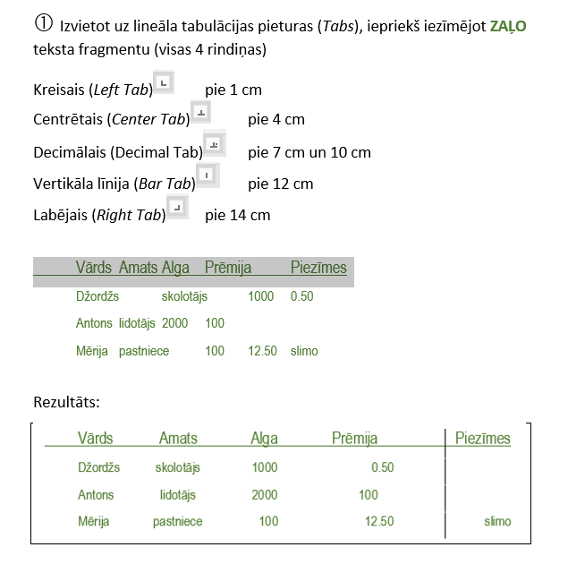
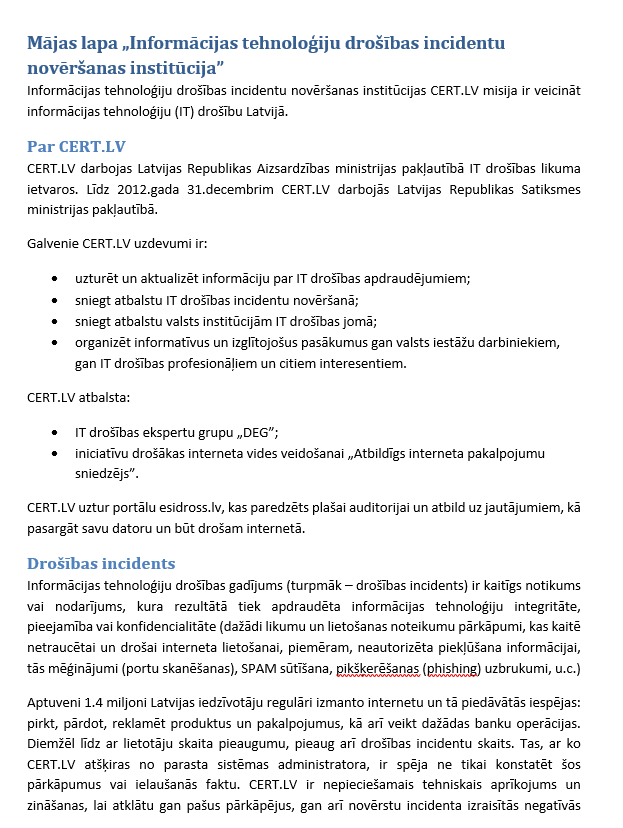

Wordā mēs atkārtojām dažādas funkcijas, filtrus un kā skaisti iekārtot lapas.
Šeit ir apskatāms dažu stundu darbs(tabulatori):

Wordā bija arī mums pārbaudes darbs, kuru rakstijām. Mums bija doti vairāki uzdevumi un lapas. Vienā no tām (apskatīt apakšā esošo bildi) bija jārediģē izskats no dotajiem kritērijiem.
